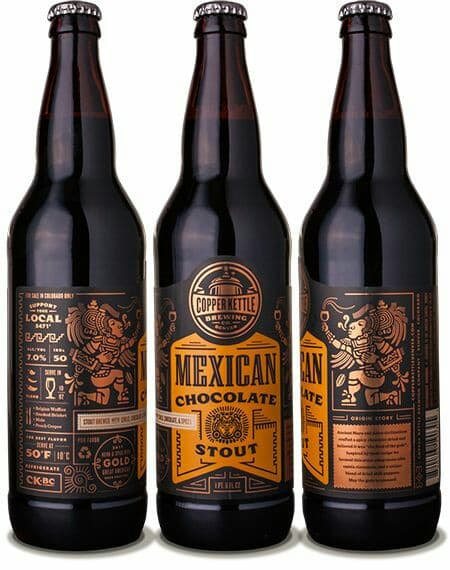

COMIENZO
Nacemos en julio del 2018, la idea fue concebida por el Ing. Rodrigo Morales Plum , quien al acompañar a su padre a España degustó estilos de cervezas que en México no existían. Rodrigo comenzó a experimentar y cocinar cerveza en la cocina de su casa. Él, apasionado por los diferentes sabores probados en el viejo mundo, y los grandes sabores de su tierra, soñaba con crear una cerveza mexicana/tlaxcalteca de gran calidad y a un precio justo. Fue así que decidió formar unos estudios en elaboración de cerveza, tomando diversos cursos para hacerse un experto en la materia.
